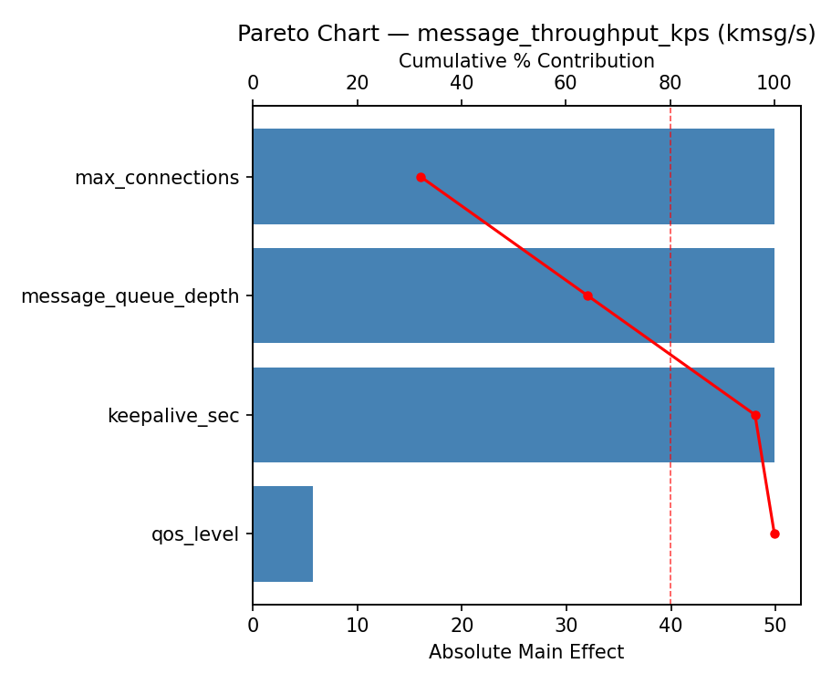
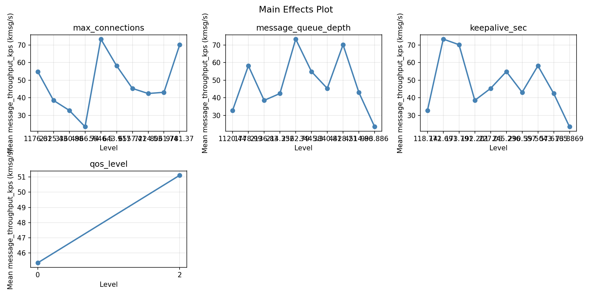
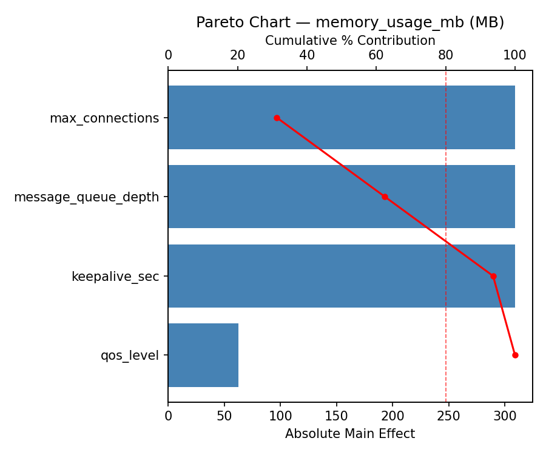
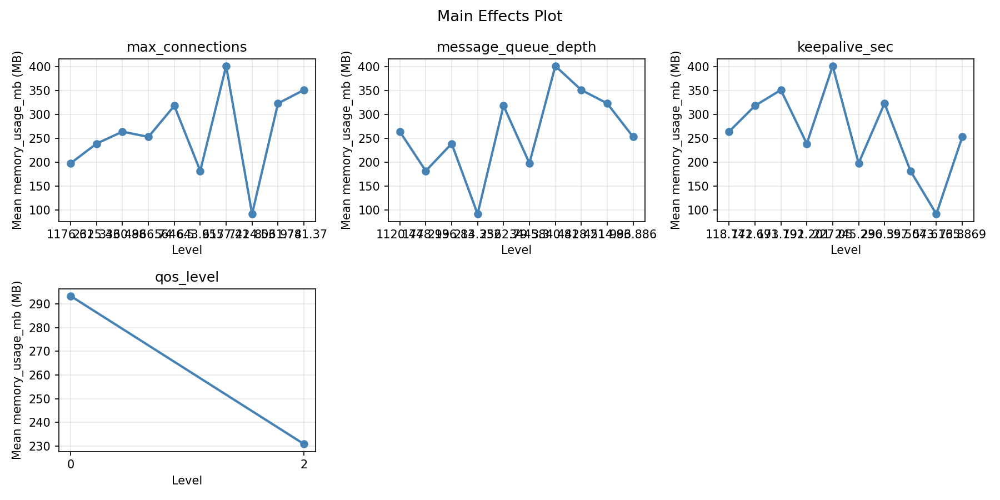
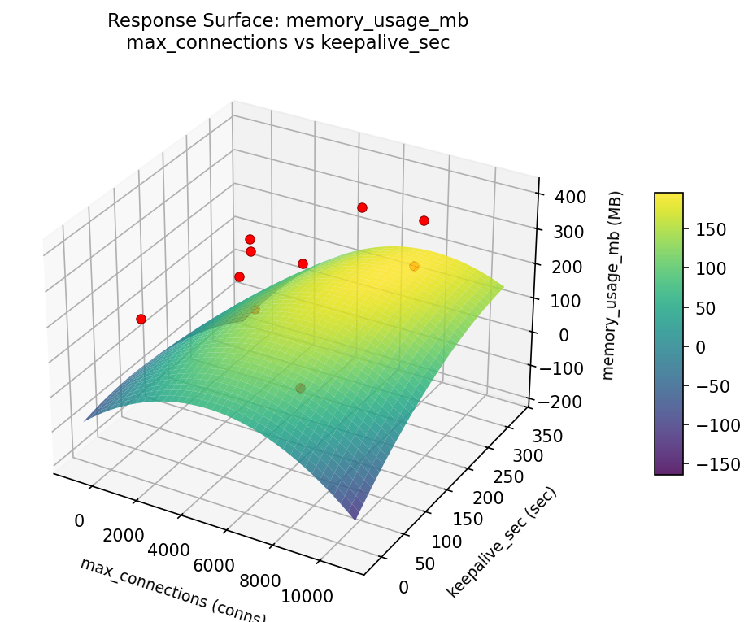
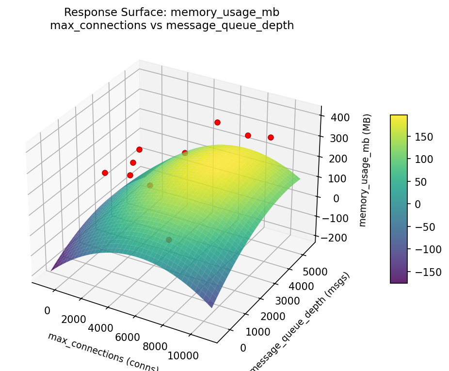
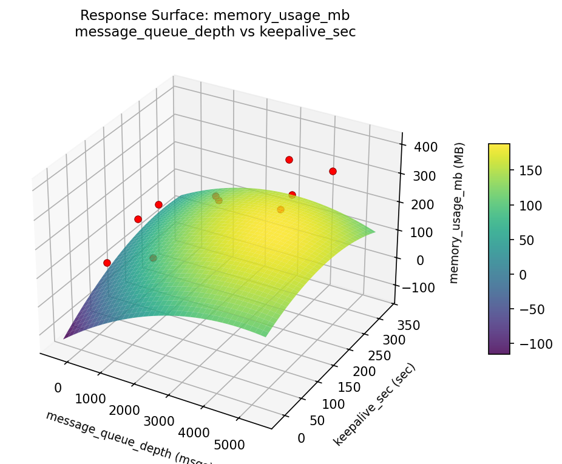
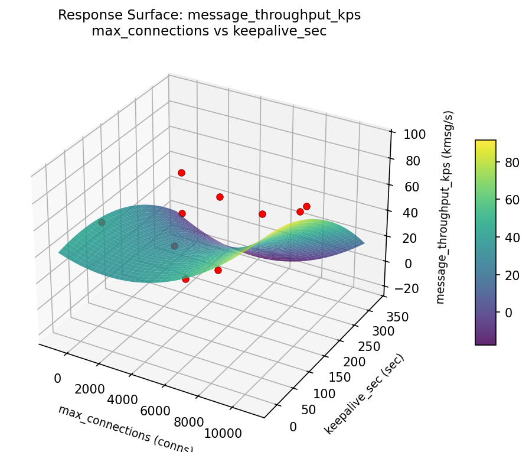
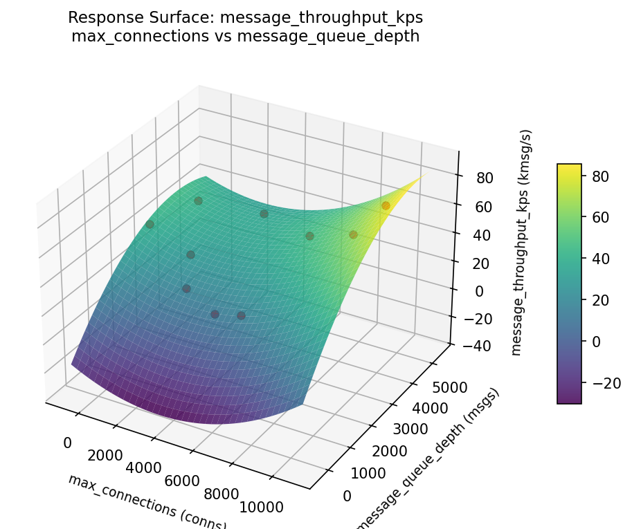
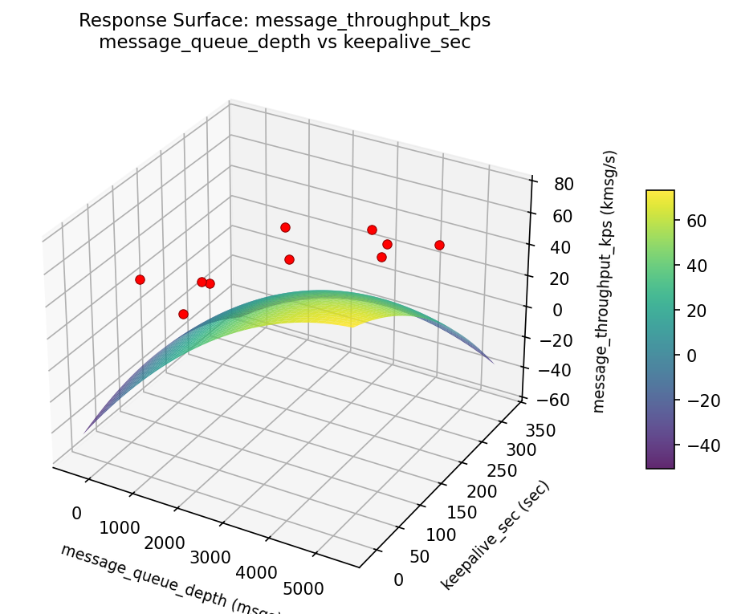

Summary
This experiment investigates mqtt broker tuning. Latin Hypercube exploration of 4 MQTT broker parameters for message throughput and memory usage.
The design varies 4 factors: max connections (conns), ranging from 100 to 10000, message queue depth (msgs), ranging from 100 to 5000, keepalive sec (sec), ranging from 15 to 300, and qos level, ranging from 0 to 2. The goal is to optimize 2 responses: message throughput kps (kmsg/s) (maximize) and memory usage mb (MB) (minimize). Fixed conditions held constant across all runs include broker = mosquitto, protocol = mqtt_v5.
Latin Hypercube Sampling was used to space 10 runs across the 4-dimensional factor space with good coverage and minimal gaps, making it ideal for computer experiments where the response surface may be complex.
Key Findings
For message throughput kps, the most influential factors were max connections (31.6%), message queue depth (31.6%), keepalive sec (31.6%). The best observed value was 73.4 (at max connections = 8666.23, message queue depth = 311.813, keepalive sec = 229.914).
For memory usage mb, the most influential factors were max connections (32.1%), message queue depth (32.1%), keepalive sec (32.1%). The best observed value was 92.0 (at max connections = 4869.73, message queue depth = 2915.61, keepalive sec = 185.779).
Recommended Next Steps
- Consider whether any fixed factors should be varied in a future study.
Experimental Setup
Factors
| Factor | Low | High | Unit |
|---|
max_connections | 100 | 10000 | conns |
message_queue_depth | 100 | 5000 | msgs |
keepalive_sec | 15 | 300 | sec |
qos_level | 0 | 2 | |
Fixed: broker = mosquitto, protocol = mqtt_v5
Responses
| Response | Direction | Unit |
|---|
message_throughput_kps | ↑ maximize | kmsg/s |
memory_usage_mb | ↓ minimize | MB |
Configuration
{
"metadata": {
"name": "MQTT Broker Tuning",
"description": "Latin Hypercube exploration of 4 MQTT broker parameters for message throughput and memory usage"
},
"factors": [
{
"name": "max_connections",
"levels": [
"100",
"10000"
],
"type": "continuous",
"unit": "conns"
},
{
"name": "message_queue_depth",
"levels": [
"100",
"5000"
],
"type": "continuous",
"unit": "msgs"
},
{
"name": "keepalive_sec",
"levels": [
"15",
"300"
],
"type": "continuous",
"unit": "sec"
},
{
"name": "qos_level",
"levels": [
"0",
"2"
],
"type": "categorical",
"unit": ""
}
],
"fixed_factors": {
"broker": "mosquitto",
"protocol": "mqtt_v5"
},
"responses": [
{
"name": "message_throughput_kps",
"optimize": "maximize",
"unit": "kmsg/s"
},
{
"name": "memory_usage_mb",
"optimize": "minimize",
"unit": "MB"
}
],
"settings": {
"operation": "latin_hypercube",
"test_script": "use_cases/72_mqtt_broker_tuning/sim.sh"
}
}
Experimental Matrix
The Latin Hypercube Design produces 10 runs. Each row is one experiment with specific factor settings.
| Run | max_connections | message_queue_depth | keepalive_sec | qos_level |
|---|
| 1 | 7967.6 | 2563.22 | 261.069 | 0 |
| 2 | 3874.35 | 394.655 | 137.755 | 0 |
| 3 | 435.141 | 592.298 | 107.337 | 0 |
| 4 | 8835.92 | 4737.68 | 93.3292 | 2 |
| 5 | 5860.36 | 3915.82 | 197.257 | 2 |
| 6 | 6934.01 | 2056.28 | 290.924 | 2 |
| 7 | 9964.81 | 3041.33 | 181.442 | 2 |
| 8 | 4330.83 | 2106.96 | 239.513 | 0 |
| 9 | 1858.55 | 4138.73 | 51.1644 | 0 |
| 10 | 2629.65 | 1256.62 | 39.2237 | 2 |
Step-by-Step Workflow
1
Preview the design
$ python doe.py info --config use_cases/72_mqtt_broker_tuning/config.json
2
Generate the runner script
$ python doe.py generate --config use_cases/72_mqtt_broker_tuning/config.json \
--output use_cases/72_mqtt_broker_tuning/results/run.sh --seed 42
3
Execute the experiments
$ bash use_cases/72_mqtt_broker_tuning/results/run.sh
4
Analyze results
$ python doe.py analyze --config use_cases/72_mqtt_broker_tuning/config.json
5
Get optimization recommendations
$ python doe.py optimize --config use_cases/72_mqtt_broker_tuning/config.json
6
Multi-objective optimization
With 2 competing responses, use --multi to find the best compromise via Derringer–Suich desirability.
$ python doe.py optimize --config use_cases/72_mqtt_broker_tuning/config.json --multi
7
Generate the HTML report
$ python doe.py report --config use_cases/72_mqtt_broker_tuning/config.json \
--output use_cases/72_mqtt_broker_tuning/results/report.html
Features Exercised
| Feature | Value |
|---|
| Design type | latin_hypercube |
| Factor types | continuous (3), categorical (1) |
| Arg style | double-dash |
| Responses | 2 (message_throughput_kps ↑, memory_usage_mb ↓) |
| Total runs | 10 |
Analysis Results
Generated from actual experiment runs using the DOE Helper Tool.
Response: message_throughput_kps
Top factors: max_connections (31.6%), message_queue_depth (31.6%), keepalive_sec (31.6%).
Pareto Chart

Main Effects Plot

Response: memory_usage_mb
Top factors: max_connections (32.1%), message_queue_depth (32.1%), keepalive_sec (32.1%).
Pareto Chart

Main Effects Plot

Response Surface Plots
3D surfaces fitted with quadratic RSM. Red dots are observed data points.
memory usage mb max connections vs keepalive sec

memory usage mb max connections vs message queue depth

memory usage mb message queue depth vs keepalive sec

message throughput kps max connections vs keepalive sec

message throughput kps max connections vs message queue depth

message throughput kps message queue depth vs keepalive sec

Multi-Objective Optimization
When responses compete, Derringer–Suich desirability finds the best compromise.
Each response is scaled to a 0–1 desirability, then combined via a weighted geometric mean.
Overall Desirability
D = 0.6825
Per-Response Desirability
| Response | Weight | Desirability | Predicted | Dir |
|---|
message_throughput_kps |
1.5 |
|
58.20 0.6776 58.20 kmsg/s |
↑ |
memory_usage_mb |
1.0 |
|
182.00 0.6898 182.00 MB |
↓ |
Recommended Settings
| Factor | Value |
|---|
max_connections | 5137.93 conns |
message_queue_depth | 4604.38 msgs |
keepalive_sec | 265.262 sec |
qos_level | 2 |
Source: from observed run #6
Trade-off Summary
Sacrifice = how much worse than single-objective best.
| Response | Predicted | Best Observed | Sacrifice |
|---|
memory_usage_mb | 182.00 | 92.00 | +90.00 |
Top 3 Runs by Desirability
| Run | D | Factor Settings |
|---|
| #8 | 0.6275 | max_connections=6218.49, message_queue_depth=3203.23, keepalive_sec=31.6415, qos_level=0 |
| #3 | 0.5924 | max_connections=4254.46, message_queue_depth=1362.54, keepalive_sec=57.1237, qos_level=2 |
Model Quality
| Response | R² | Type |
|---|
memory_usage_mb | 0.2729 | linear |
Full Multi-Objective Output
============================================================
MULTI-OBJECTIVE OPTIMIZATION
Method: Derringer-Suich Desirability Function
============================================================
Overall desirability: D = 0.6825
Response Weight Desirability Predicted Direction
---------------------------------------------------------------------
message_throughput_kps 1.5 0.6776 58.20 kmsg/s ↑
memory_usage_mb 1.0 0.6898 182.00 MB ↓
Recommended settings:
max_connections = 5137.93 conns
message_queue_depth = 4604.38 msgs
keepalive_sec = 265.262 sec
qos_level = 2
(from observed run #6)
Trade-off summary:
message_throughput_kps: 58.20 (best observed: 73.40, sacrifice: +15.20)
memory_usage_mb: 182.00 (best observed: 92.00, sacrifice: +90.00)
Model quality:
message_throughput_kps: R² = 0.4815 (linear)
memory_usage_mb: R² = 0.2729 (linear)
Top 3 observed runs by overall desirability:
1. Run #6 (D=0.6825): max_connections=5137.93, message_queue_depth=4604.38, keepalive_sec=265.262, qos_level=2
2. Run #8 (D=0.6275): max_connections=6218.49, message_queue_depth=3203.23, keepalive_sec=31.6415, qos_level=0
3. Run #3 (D=0.5924): max_connections=4254.46, message_queue_depth=1362.54, keepalive_sec=57.1237, qos_level=2
Full Analysis Output
=== Main Effects: message_throughput_kps ===
Factor Effect Std Error % Contribution
--------------------------------------------------------------
max_connections 49.9000 5.0258 31.6%
message_queue_depth 49.9000 5.0258 31.6%
keepalive_sec 49.9000 5.0258 31.6%
qos_level 8.1000 5.0258 5.1%
=== ANOVA Table: message_throughput_kps ===
Source DF SS MS F p-value
-----------------------------------------------------------------------------
max_connections 9 2273.3210 252.5912 1.027 0.6505
message_queue_depth 9 2273.3210 252.5912 1.027 0.6505
keepalive_sec 9 2273.3210 252.5912 1.027 0.6505
qos_level 1 164.0250 164.0250 0.667 0.5641
Error (Lenth PSE) 1 246.0375 246.0375
Total 9 2273.3210 252.5912
Note: Error estimated using Lenth's pseudo-standard-error (unreplicated design)
=== Summary Statistics: message_throughput_kps ===
max_connections:
Level N Mean Std Min Max
------------------------------------------------------------
1499.96 1 54.9000 0.0000 54.9000 54.9000
168.556 1 23.5000 0.0000 23.5000 23.5000
2723.67 1 38.5000 0.0000 38.5000 38.5000
3411.69 1 42.4000 0.0000 42.4000 42.4000
4244.93 1 32.8000 0.0000 32.8000 32.8000
5514.27 1 45.3000 0.0000 45.3000 45.3000
6475.89 1 73.4000 0.0000 73.4000 73.4000
7782.29 1 58.2000 0.0000 58.2000 58.2000
8515.86 1 70.2000 0.0000 70.2000 70.2000
9420.89 1 43.1000 0.0000 43.1000 43.1000
message_queue_depth:
Level N Mean Std Min Max
------------------------------------------------------------
1240.78 1 45.3000 0.0000 45.3000 45.3000
1893.22 1 70.2000 0.0000 70.2000 70.2000
2350.74 1 23.5000 0.0000 23.5000 23.5000
3019.25 1 32.8000 0.0000 32.8000 32.8000
3193.8 1 43.1000 0.0000 43.1000 43.1000
3798.08 1 58.2000 0.0000 58.2000 58.2000
4286.7 1 38.5000 0.0000 38.5000 38.5000
4751.84 1 73.4000 0.0000 73.4000 73.4000
534.717 1 42.4000 0.0000 42.4000 42.4000
958.825 1 54.9000 0.0000 54.9000 54.9000
keepalive_sec:
Level N Mean Std Min Max
------------------------------------------------------------
120.125 1 73.4000 0.0000 73.4000 73.4000
148.177 1 23.5000 0.0000 23.5000 23.5000
161.026 1 58.2000 0.0000 58.2000 58.2000
203.936 1 32.8000 0.0000 32.8000 32.8000
238.714 1 45.3000 0.0000 45.3000 45.3000
258.449 1 38.5000 0.0000 38.5000 38.5000
293.305 1 54.9000 0.0000 54.9000 54.9000
36.5882 1 43.1000 0.0000 43.1000 43.1000
50.5702 1 42.4000 0.0000 42.4000 42.4000
94.8392 1 70.2000 0.0000 70.2000 70.2000
qos_level:
Level N Mean Std Min Max
------------------------------------------------------------
0 5 44.1800 18.1526 23.5000 73.4000
2 5 52.2800 14.0644 32.8000 70.2000
=== Main Effects: memory_usage_mb ===
Factor Effect Std Error % Contribution
--------------------------------------------------------------
max_connections 309.0000 28.6955 32.1%
message_queue_depth 309.0000 28.6955 32.1%
keepalive_sec 309.0000 28.6955 32.1%
qos_level 34.2000 28.6955 3.6%
=== ANOVA Table: memory_usage_mb ===
Source DF SS MS F p-value
-----------------------------------------------------------------------------
max_connections 9 74108.9000 8234.3222 1.877 0.5160
message_queue_depth 9 74108.9000 8234.3222 1.877 0.5160
keepalive_sec 9 74108.9000 8234.3222 1.877 0.5160
qos_level 1 2924.1000 2924.1000 0.667 0.5641
Error (Lenth PSE) 1 4386.1500 4386.1500
Total 9 74108.9000 8234.3222
Note: Error estimated using Lenth's pseudo-standard-error (unreplicated design)
=== Summary Statistics: memory_usage_mb ===
max_connections:
Level N Mean Std Min Max
------------------------------------------------------------
1499.96 1 198.0000 0.0000 198.0000 198.0000
168.556 1 253.0000 0.0000 253.0000 253.0000
2723.67 1 239.0000 0.0000 239.0000 239.0000
3411.69 1 92.0000 0.0000 92.0000 92.0000
4244.93 1 264.0000 0.0000 264.0000 264.0000
5514.27 1 401.0000 0.0000 401.0000 401.0000
6475.89 1 318.0000 0.0000 318.0000 318.0000
7782.29 1 182.0000 0.0000 182.0000 182.0000
8515.86 1 351.0000 0.0000 351.0000 351.0000
9420.89 1 323.0000 0.0000 323.0000 323.0000
message_queue_depth:
Level N Mean Std Min Max
------------------------------------------------------------
1240.78 1 401.0000 0.0000 401.0000 401.0000
1893.22 1 351.0000 0.0000 351.0000 351.0000
2350.74 1 253.0000 0.0000 253.0000 253.0000
3019.25 1 264.0000 0.0000 264.0000 264.0000
3193.8 1 323.0000 0.0000 323.0000 323.0000
3798.08 1 182.0000 0.0000 182.0000 182.0000
4286.7 1 239.0000 0.0000 239.0000 239.0000
4751.84 1 318.0000 0.0000 318.0000 318.0000
534.717 1 92.0000 0.0000 92.0000 92.0000
958.825 1 198.0000 0.0000 198.0000 198.0000
keepalive_sec:
Level N Mean Std Min Max
------------------------------------------------------------
120.125 1 318.0000 0.0000 318.0000 318.0000
148.177 1 253.0000 0.0000 253.0000 253.0000
161.026 1 182.0000 0.0000 182.0000 182.0000
203.936 1 264.0000 0.0000 264.0000 264.0000
238.714 1 401.0000 0.0000 401.0000 401.0000
258.449 1 239.0000 0.0000 239.0000 239.0000
293.305 1 198.0000 0.0000 198.0000 198.0000
36.5882 1 323.0000 0.0000 323.0000 323.0000
50.5702 1 92.0000 0.0000 92.0000 92.0000
94.8392 1 351.0000 0.0000 351.0000 351.0000
qos_level:
Level N Mean Std Min Max
------------------------------------------------------------
0 5 245.0000 93.4371 92.0000 323.0000
2 5 279.2000 95.2140 182.0000 401.0000
Optimization Recommendations
=== Optimization: message_throughput_kps ===
Direction: maximize
Best observed run: #3
max_connections = 8666.23
message_queue_depth = 311.813
keepalive_sec = 229.914
qos_level = 0
Value: 73.4
RSM Model (linear, R² = 0.3828, Adj R² = -0.1110):
Coefficients:
intercept +47.8357
max_connections +12.3706
message_queue_depth +4.1609
keepalive_sec +18.2228
qos_level -1.9002
Predicted optimum (from linear model, at observed points):
max_connections = 8666.23
message_queue_depth = 311.813
keepalive_sec = 229.914
qos_level = 0
Predicted value: 64.2323
Surface optimum (via L-BFGS-B, linear model):
max_connections = 10000
message_queue_depth = 5000
keepalive_sec = 300
qos_level = 0
Predicted value: 84.4903
Model quality: Weak fit — consider adding center points or using a different design.
Factor importance:
1. max_connections (effect: 49.9, contribution: 32.7%)
2. message_queue_depth (effect: 49.9, contribution: 32.7%)
3. keepalive_sec (effect: 49.9, contribution: 32.7%)
4. qos_level (effect: -3.1, contribution: 2.0%)
=== Optimization: memory_usage_mb ===
Direction: minimize
Best observed run: #4
max_connections = 4869.73
message_queue_depth = 2915.61
keepalive_sec = 185.779
qos_level = 0
Value: 92.0
RSM Model (linear, R² = 0.0775, Adj R² = -0.6606):
Coefficients:
intercept +262.6666
max_connections -0.7437
message_queue_depth -18.1206
keepalive_sec -40.1715
qos_level +3.2366
Predicted optimum (from linear model, at observed points):
max_connections = 9183.96
message_queue_depth = 1443.83
keepalive_sec = 24.3423
qos_level = 2
Predicted value: 311.0013
Surface optimum (via L-BFGS-B, linear model):
max_connections = 10000
message_queue_depth = 5000
keepalive_sec = 300
qos_level = 0
Predicted value: 200.3942
Model quality: Weak fit — consider adding center points or using a different design.
Factor importance:
1. max_connections (effect: 309.0, contribution: 32.8%)
2. message_queue_depth (effect: 309.0, contribution: 32.8%)
3. keepalive_sec (effect: 309.0, contribution: 32.8%)
4. qos_level (effect: 15.0, contribution: 1.6%)